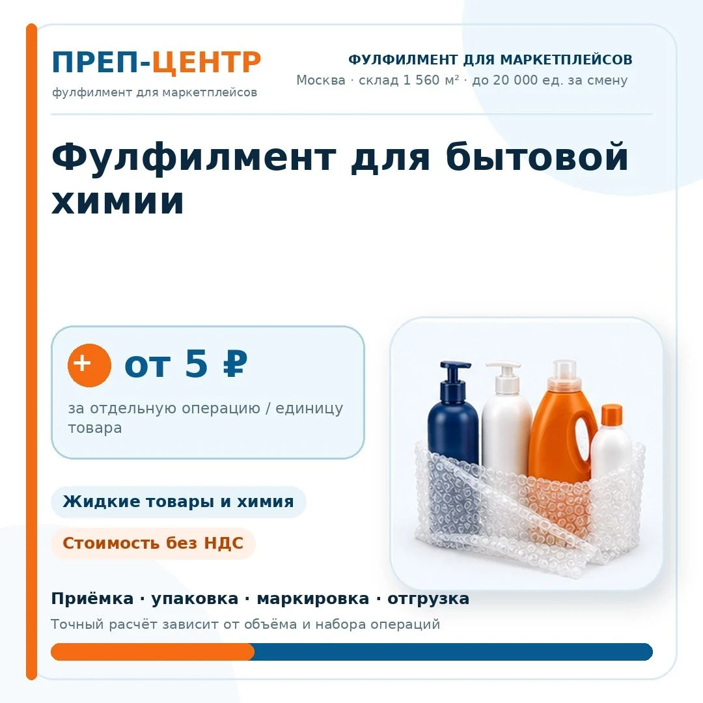
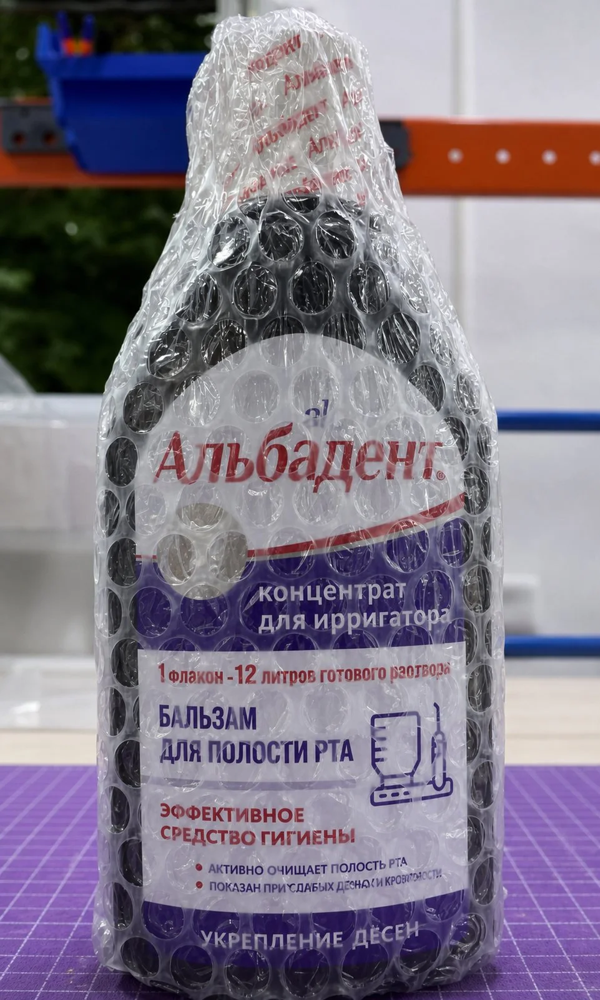
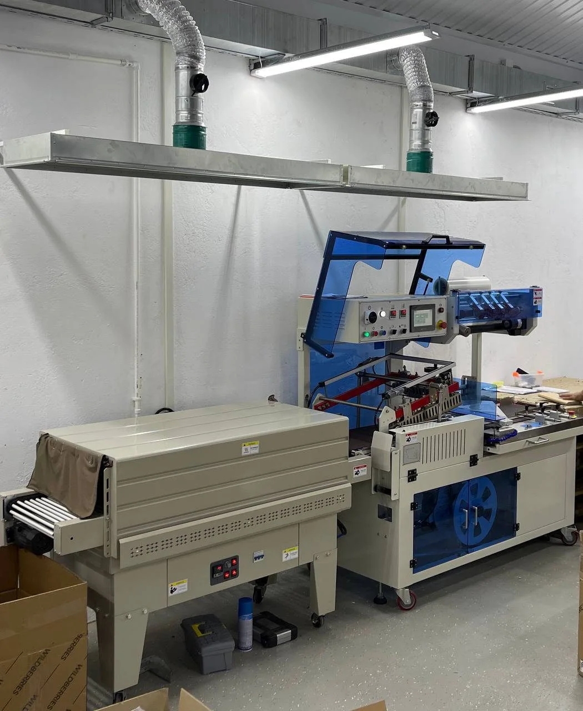
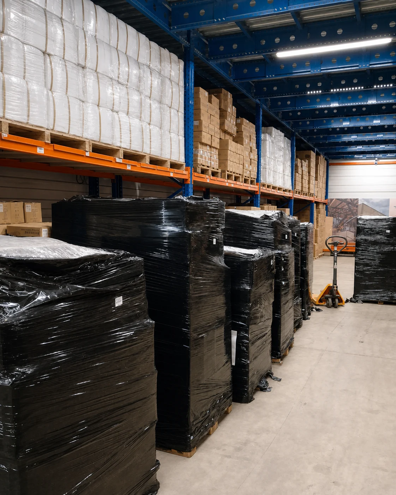

Фулфилмент для бытовой химии для Ozon, Wildberries и Яндекс Маркета
Опубликовано: 22 августа 2026 · Восстановлено: 4 ноября 2026
Принимаем, проверяем, сортируем, упаковываем и маркируем бытовую химию для поставок на маркетплейсы. Работаем с жидкими средствами, порошками и другими товарами категории, подбирая упаковку под тару, состояние товара и требования конкретной поставки.

Какие товары берем в работу
Бытовая химия включает товары с разными типами первичной упаковки. Поэтому процесс подготовки зависит от того, что именно находится в партии: жидкость во флаконе, средство в канистре, порошок, гранулы или комплект из нескольких позиций.
- моющие и чистящие средства;
- средства для уборки;
- средства для мытья посуды;
- бытовые жидкости во флаконах и канистрах;
- порошки и гранулированные средства;
- средства бытового назначения в банках, пакетах и другой потребительской таре;
- товары с крышками, дозаторами и триггерами;
- наборы бытовой химии.
Возможность работы с товаром, для которого нужны специальные условия хранения или перевозки, согласуем до приемки партии.
Основные риски при подготовке бытовой химии
Протечка жидкого товара
Крышка, дозатор или соединение тары могут пропускать содержимое при перевозке и обработке. Защитная упаковка помогает снизить риск повреждения соседних товаров и транспортного короба.
Просыпание порошка или гранул
При повреждении первичной упаковки сыпучий товар может попасть на соседние единицы. Поэтому важно сохранить целостность пакета или другой потребительской тары.
Повреждение потребительской упаковки
Помятый короб, треснувшая крышка, поврежденная этикетка или нарушенная тара могут создать проблемы на дальнейших этапах поставки и продажи.
Маркировка закрыта упаковкой
Если ВПП или термоусадка закрывают рабочий штрихкод или этикетку, маркировку размещают на внешнем слое так, чтобы код можно было считать.
Смешение SKU
В одной партии могут быть разные объемы, ароматы, форматы тары и артикулы. Перед дальнейшей обработкой товар разделяется по согласованным признакам.
Как готовим бытовую химию к маркетплейсам
-
Приемка
Принимаем товар по грузоместам или поштучно, идентифицируем партию и ставим ее на складской учет.
-
Сортировка
Разделяем товары по SKU и другим согласованным признакам перед дальнейшей обработкой.
-
Проверка
По техническому заданию проверяем видимое состояние тары, крышек, упаковки и комплектности. Глубина проверки зависит от задачи клиента.
-
Упаковка
Используем воздушно-пузырьковую пленку, термоусадочную пленку, пакеты, короба или сочетание нескольких способов. Схему выбираем под конкретный товар.
-
Маркировка
Печатаем и наносим этикетки маркетплейсов. Если для товара требуется маркировка «Честный знак», состав операций согласуется отдельно.
-
FBO или FBS
Формируем поставку для FBO либо размещаем товар на складе для последующей обработки заказов по FBS.


Подробнее: термоусадка и упаковка в ВПП, этикетки маркетплейсов, «Честный знак».
Как выбираем упаковку
| Товар или задача | Что может применяться |
|---|---|
| Флакон с жидким средством | ВПП, термоусадка, короб или сочетание нескольких способов. |
| Товар с дозатором или триггером | Дополнительная защита выступающих элементов и внешняя упаковка. |
| Пакет с порошком или гранулами | Защита первичной упаковки и внешний упаковочный слой. |
| Несколько единиц в комплекте | Комплектация и общая упаковка готового набора. |
| Этикетка закрылась после упаковки | Маркировка на внешнем слое с доступным для сканирования кодом. |
Конкретный способ упаковки определяем после оценки товара, состояния первичной тары, объема партии, количества SKU и требований поставки.
Жидкая бытовая химия
Для жидких средств отдельно учитываем конструкцию флакона, крышки, помпы или триггера. Если товару нужна дополнительная защита от механического воздействия, используем ВПП. Термоусадка может применяться как внешний фиксирующий слой. После упаковки рабочая маркировка должна оставаться доступной для сканирования.
Если основная особенность товара связана с жидкостью и риском протечки, смотрите также фулфилмент для жидких товаров. Для шампуней и гелей есть отдельная категорийная страница «Фулфилмент для шампуней и гелей».
Реальные ограничения
- способ упаковки зависит от конкретной тары и товара;
- глубина проверки определяется техническим заданием клиента;
- ВПП и термоусадка применяются по задаче, а не автоматически ко всей бытовой химии;
- отдельные требования к составу или условиям хранения нужно сообщить до приемки;
- срок обработки крупной партии зависит от количества SKU и набора операций;
- возможность работы с товарами со специальными требованиями согласуется до приемки партии.
Для проектов с большим объемом и ограниченным сроком смотрите срочную обработку крупных партий.
Стоимость фулфилмента для бытовой химии
Базовая стоимость отдельной складской операции для этой категории начинается от 5 ₽ за единицу товара. Финальная цена зависит от объема партии, упаковочных материалов и состава работ.
В расчет могут входить:
- приемка и сортировка;
- проверка товара;
- ВПП и другие упаковочные материалы;
- термоусадочная упаковка;
- этикетки маркетплейсов;
- операции с кодами маркировки;
- комплектация;
- подготовка FBO или обработка FBS-заказов.
Смотреть действующие тарифы или рассчитать стоимость своей партии.
Реальный проект: 10 000 единиц бытовой химии за 3 дня

В проект вошли:
- приемка;
- сортировка;
- упаковка в воздушно-пузырьковую пленку;
- термоусадочная упаковка;
- маркировка;
- маркировка QR-кодом.
18 ₽ за единицу - стоимость именно этого выполненного проекта при его объеме и составе операций. Это не универсальный тариф для любой партии бытовой химии.
Соседние категории химической продукции
Для разных типов химической продукции на сайте есть отдельные страницы с более точными сценариями обработки:
FBO и FBS для бытовой химии
FBO
Подготавливаем товар по согласованному регламенту, формируем поставку и передаем ее для дальнейшей доставки на склад маркетплейса.
FBS
Товар хранится на складе Преп-Центра. После поступления заказа его собирают, упаковывают и передают в регулярную отгрузку.
Частые вопросы
Как правильно упаковать бытовую химию для Ozon и Wildberries?
Схема зависит от типа товара и первичной упаковки. Для жидких средств оценивают состояние флакона, крышки и дозатора, для порошков - целостность пакета или другой тары. После этого выбирают ВПП, термоусадку, короб или сочетание нескольких способов.
Как снизить риск протечки бытовой химии при поставке на маркетплейс?
Сначала оценивают конструкцию флакона и состояние крышки или дозатора. Дополнительная защитная упаковка помогает снизить риск механического повреждения и последствий возможной протечки.
Как упаковывать порошки и другие сыпучие средства?
Важно сохранить целостность первичной упаковки и защитить ее от повреждения при перевозке. Конкретный внешний слой выбирают под тару, размер товара и требования поставки.
Когда для бытовой химии нужна ВПП, а когда термоусадка?
ВПП применяется для дополнительной амортизации и защиты товара от механического воздействия. Термоусадка может использоваться как внешний фиксирующий слой. Для части товаров используют оба способа.
Куда наносить этикетку, если товар дополнительно упакован в пленку?
Если защитная упаковка закрывает рабочий код, маркировку размещают на внешнем слое так, чтобы ее можно было считать при дальнейшей обработке товара.
Работает ли Преп-Центр с маркировкой «Честный знак»?
Да, для товаров, где такая маркировка требуется. Состав конкретных операций согласуется отдельно под задачу клиента.
Сколько времени занимает обработка крупной партии бытовой химии?
Срок зависит от объема, количества SKU и набора операций. В реальном проекте Преп-Центра партия из 10 000 единиц бытовой химии была обработана за 3 дня от приемки до отгрузки на склад маркетплейса.
Можно ли хранить бытовую химию на складе и работать по FBS?
Да, если конкретный товар подходит под условия хранения Преп-Центра. При работе по FBS товар хранится на складе, а после поступления заказа его собирают, упаковывают и передают в отгрузку.
Рассчитаем обработку вашей партии
Пришлите фото товара, объем партии, количество SKU и маркетплейс. Рассчитаем нужные операции, упаковку и стоимость обработки.